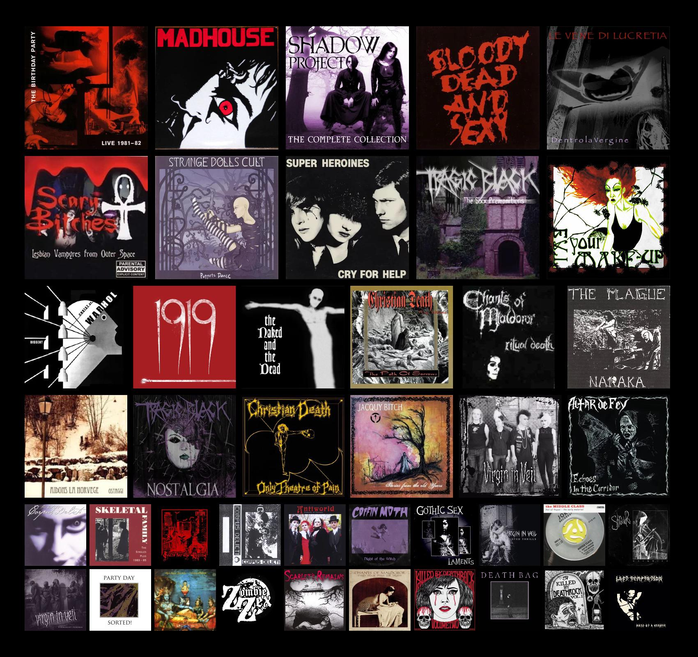
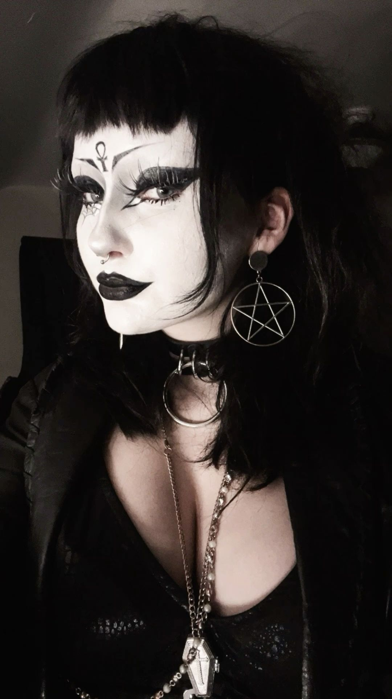
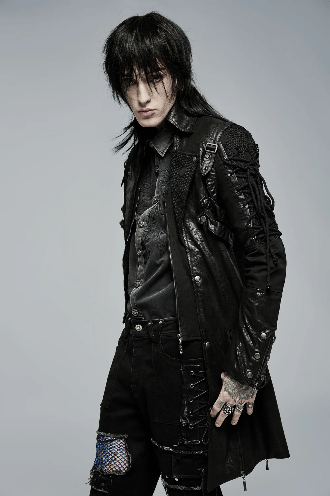

centrada en la música rock gótico, la literatura, el arte y una fascinación por lo macabro, lo sobrenatural y el romanticismo oscuro.

Aquí se detallan sus características fundamentales:
Origen Musical y Estético: Nació en clubes nocturnos como el "Batcave" en el Reino Unido. Bandas pioneras como Bauhaus, Joy Division y Siouxsie and the Banshees sentaron las bases de su sonido oscuro.

Identidad y Valores: Va más allá de la moda, abarcando una filosofía que abraza la libertad de expresión, el individualismo y la valoración de aspectos de la vida que la cultura dominante suele ignorar o temer, como la muerte, la tristeza y la decadencia.

Estilo Visual (Moda Gótica): La vestimenta es mayoritariamente negra, a menudo influenciada por la época victoriana, eduardiana y el romanticismo. Incluye el uso de corsés, encajes, terciopelo, maquillaje blanco y negro, labiales oscuros, cabello teñido de negro y joyería simbólica.
